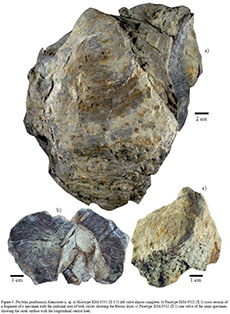
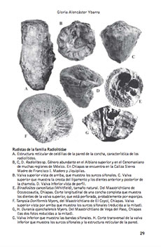

Referencias
Gloria Alencáster Ybarra
1927 -
Gloria Alencáster es pionera de la investigación paleontológica en México, es decir, del estudio de la vida en el pasado a través de los fósiles.
Nació en la ciudad de México y desde chica supo que su vocación era la biología, por eso decidió estudiar esta carrera en la Facultad de Ciencias de la UNAM (1948).
Un par de años después, se le presentó la oportunidad de trabajar en la Sección de Paleontología Gerencia de Exploración de PEMEX. Ahí, realizó sus primeros estudios sobre diferentes grupos de invertebrados fósiles, los cuales eran el material que recolectaban los geólogos durante las campañas de exploración.
Este campo del conocimiento la cautivo y por eso decidió especializar sus estudios en paleontología: hizo la maestría en geología en la Universidad de Columbia en Nueva York, Estados Unidos, (1956) y luego el doctorado en ciencias, de vuelta en la UNAM (1969). Gloria eligió enfocarse al estudio de los moluscos (popularmente conocidos como caracoles) marinos fosilizados, procedentes de localidades fosilíferas de casi todo el país; incluso descubrió nuevas especies de estos organismos para la ciencia.
Su trabajo en esta área ha permitido conocer más sobre la riqueza faunística del registro fósil del país y, a partir de esto, hacer recreaciones sobre cómo era el ambiente en el que vivieron estos organismos hace cientos de millones de años, cuando el mar cubría casi totalmente el territorio mexicano.
Luego de trabajar para el gobierno, Gloria ingresó al Instituto Geología de la UNAM, donde participó en la creación de la hoy “Colección Nacional de Paleontología”.
La docencia y la divulgación de la ciencia también han sido parte de su quehacer; e la misma Facultad de Ciencias donde ella estudió, dio numerosos cursos y también ha participado en diferentes programas culturales.
Es miembro de varias sociedades científicas, entre ellas, la Sociedad Geológica Mexicana, Sociedad Mexicana de Paleontología, la Asociación Paleontológica inglesa y la Sociedad Paleontológica en Estados Unidos.
Aportación
- 
Gloria Alencáster, Lourdes Omaña, Celestina González–Arreola y Delfino Hernández–Láscares . Primer registro del género Trichites (Mollusca, Bivalvia) del Jurásico Superior (Kimmeridgiano) de Santiago Coatepec, Puebla, México. Revista Mexicana de Ciencias Geológicas

Forjadores de la ciencia en la UNAM: Conferencias del ciclo Mi vida en la ciencia, Gloria Alencáster Ybarra. Instituto de Geología